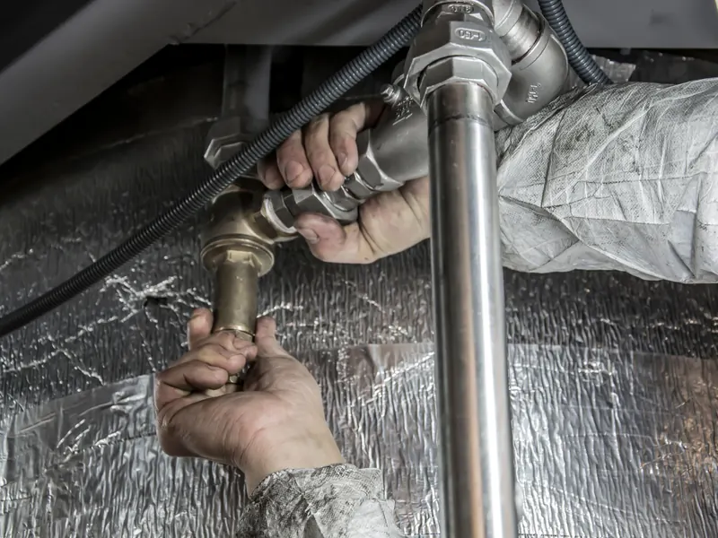
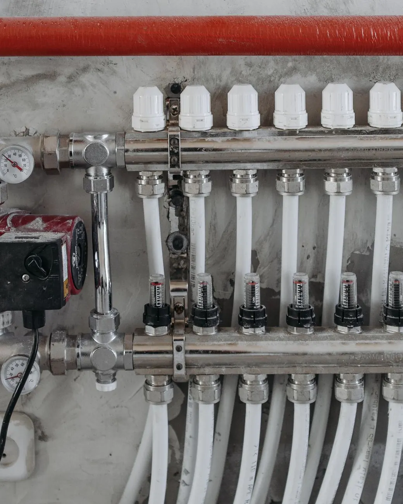
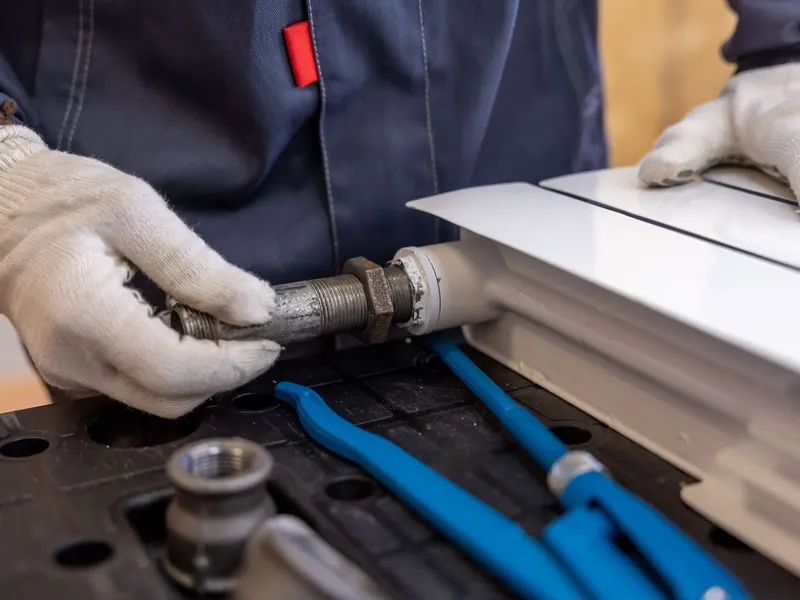
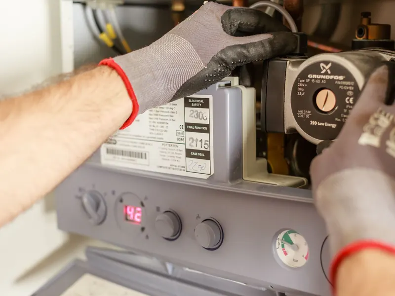
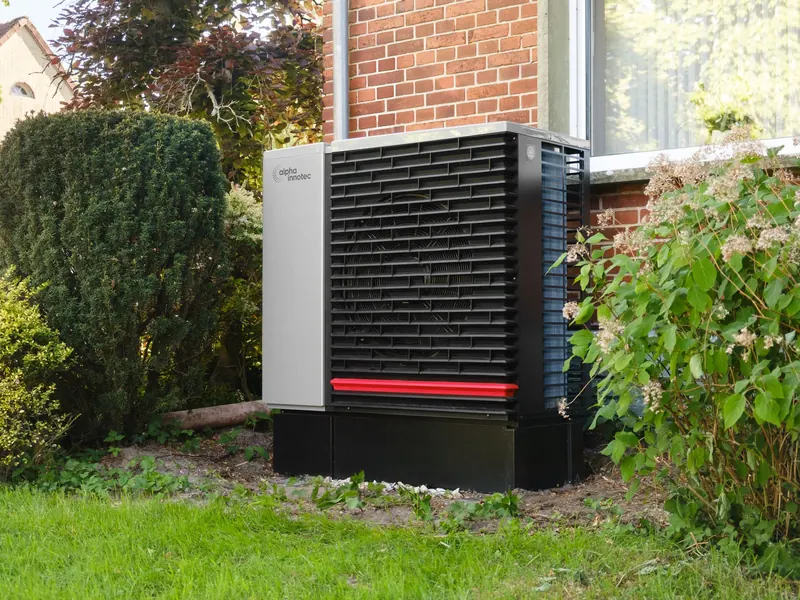
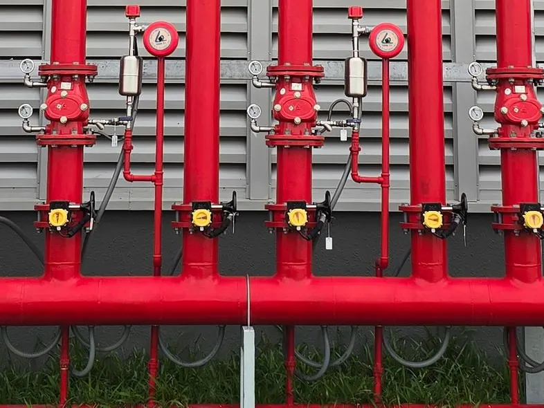
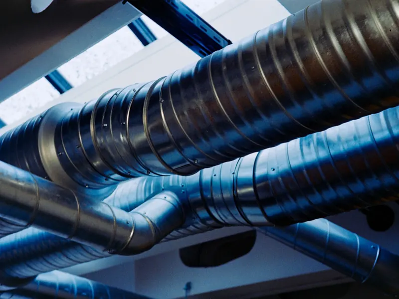
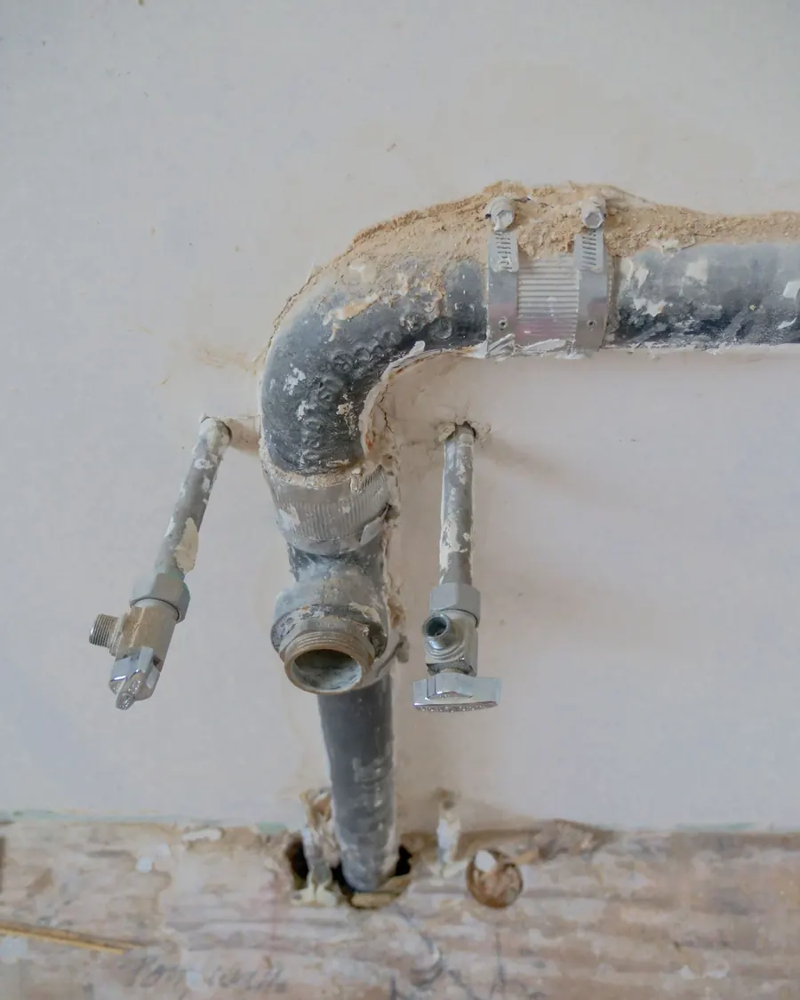
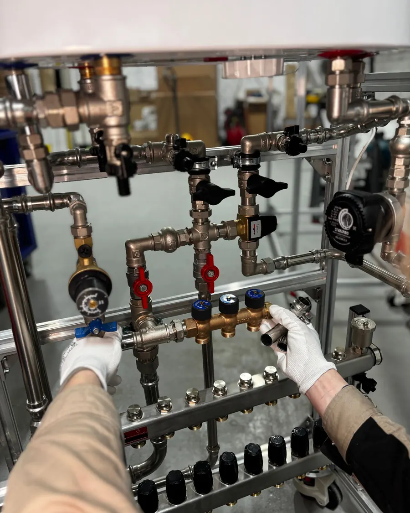
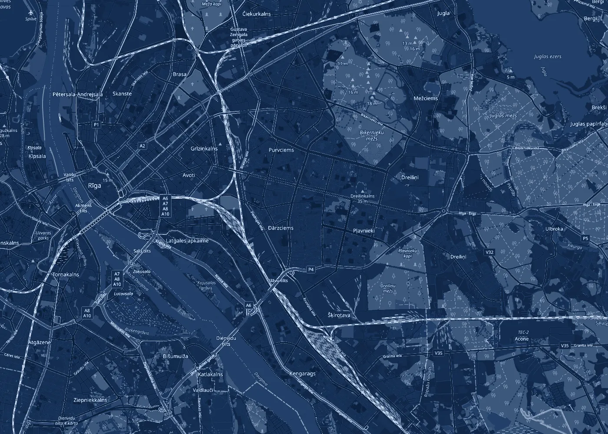

P-01Ūdensvads un kanalizācija
Ierīkojam un nomainām ūdensvada un kanalizācijas caurules, stāvvadus, skaitītāju mezglus un santehnikas ierīces.
Ierīkošana · nomaiņa · remonts
A-00Santehnika · Apkure · Ūdensapgāde
Ierīkojam un remontējam santehniku un apkuri Rīgā: ūdensvadu un kanalizāciju, radiatorus, apkures katlus un siltumsūkņus.

P-00Pakalpojumi
Visu, pa ko mājā plūst ūdens un siltums: no stāvvada līdz radiatoram un jaucējkrānam.

P-01Ierīkojam un nomainām ūdensvada un kanalizācijas caurules, stāvvadus, skaitītāju mezglus un santehnikas ierīces.
Ierīkošana · nomaiņa · remonts

P-02Montējam apkures sistēmas un radiatorus, nomainām vecos, regulējam un atgaisojam sistēmu, lai siltums sadalās vienmērīgi.
Radiatori · caurules · regulēšana

P-03Uzstādām malkas un gāzes apkures katlus un pieslēdzam tos apkures sistēmai. Strādājam arī ar Junkers iekārtām.
Malka · gāze · Junkers

P-04Uzstādām siltumsūkņus un pieslēdzam tos apkurei un karstā ūdens sagatavošanai.
Uzstādīšana · pieslēgšana

P-05Ugunsdzēsības ūdensvada sistēmas ēkām: caurules, vārsti un mezgli. BIS reģistrā: ūdensapgādes un kanalizācijas sistēmu, tostarp ugunsdzēsības, būvdarbu vadīšana un būvuzraudzība.
Ugunsdzēsības sistēmas

P-06Vadām apkures, ventilācijas un gaisa kondicionēšanas darbus objektā un veicam būvuzraudzību: darbu secība, kvalitāte un saskaņošana.
Darbu vadīšana un būvuzraudzība

R-00Remonts
Piezvaniet un pastāstiet, kas notiek. Ja varat, atsūtiet foto uz e-pastu: tā ātrāk sapratīsim, ko ņemt līdzi.
B-00Būvkomersantu reģistrs
SIA „SAN SV” ir reģistrēta Būvniecības informācijas sistēmas būvkomersantu reģistrā. Reģistrētās darbības sfēras:
S-00Kā strādājam
Pastāstiet, kas jādara un kur atrodas objekts. Foto palīdz.
Atbraucam, apskatām sistēmu un izmērām. Piedāvājam risinājumu.
Pirms darba vienojamies par darbiem, materiāliem, cenu un termiņu.
Veicam darbus, pārbaudām savienojumus un spiedienu, palaižam sistēmu un sakopjam aiz sevis.

Z-00Kur strādājam
Strādājam Rīgā. Mūsu adreses ir Rīgas austrumu daļā, tāpēc Purvciems, Pļavnieki un Dārzciems ir tepat blakus. Ja objekts ir ārpus Rīgas, piezvaniet, vienosimies.

K-00Kontakti
Aprakstiet darbu un adresi. Atbildēsim un vienosimies par apskati.